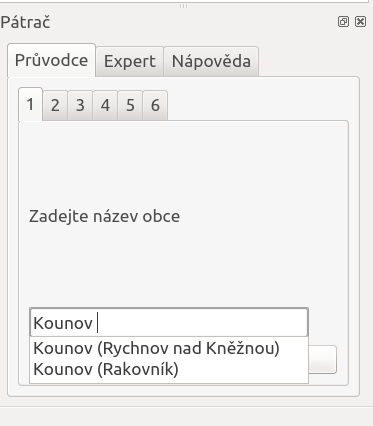
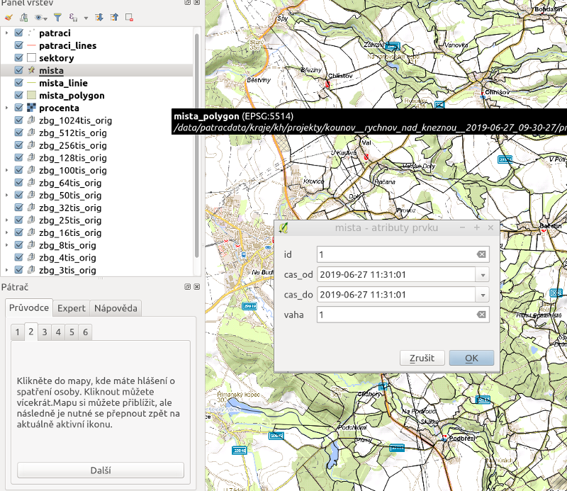
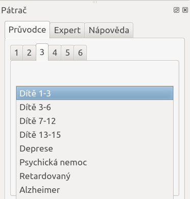
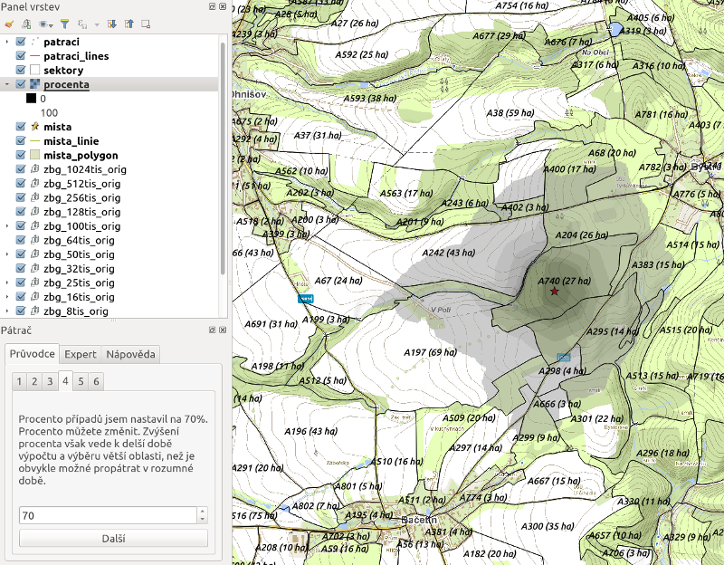
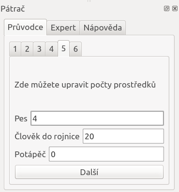
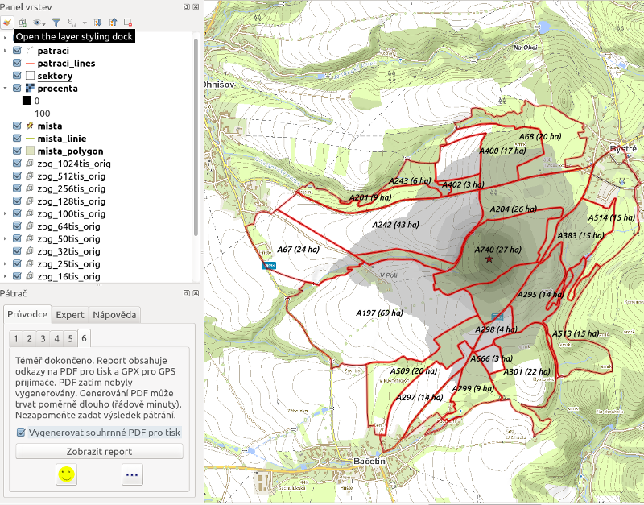
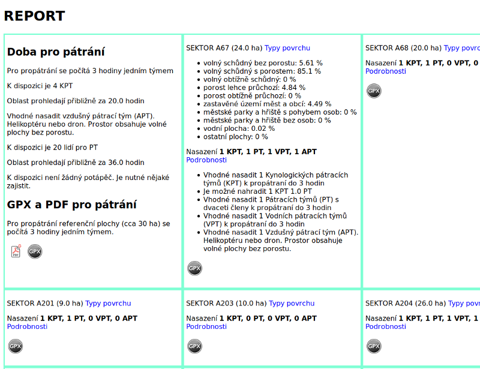

Pátrač
Menu
Průvodce
Průvodce umožní zahájit pátrání, od zadání vstupů až po tisk mapy.
Zadání obce

Z našeptávače se vybere obec, kde bude pátrání probíhat.
Kontrola území

Oblast je velká přibližně 10x10 km. Oblast je možno zmenšit nebo zvětšit, případně posunout.
Zadání míst posledního spatření

Kliknutím do mapy se zadávají místa posledního spatření. Ke každému místu je možno v dialogovém okně zvolit čas od do a váhu, kterou určení přikládáme. Větší číslo = větší váha (0-9). Hodnota 0 znamená vyloučení bodu z výpočtu. V případě zadání min. dvou bodů je výpočet ovlivněn i pravděpodobným směrem pohybu.
Výběr typu osoby

Výběrem ze seznamu určíme typ osoby (dítě, osoba v depresi, osoba s alzhaimerem, apod.). V budoucnu mohou pribýt např. i údaje o kondici nebo znalosti terénu.
Omezení území

Vypočítaná pravděpodobnostní mapa je automaticky omezena na vhodná procenta. Zvýšením procenta se zvyšuje pravděpodobnost nálezu, ale také rozsah území, které je nutno prohledat. Procento proto nedoporučujeme měnit, zejména v případě začínajících pátračů.
Určení prostředků

V tomto okně je možno definovat, pokud je známe, počty prostředků. Výsledný report pak obsahuje i kalkulace doby hledání.
Zahájení pátrání
Pátrání je možno začít. Soubory GPX jsou připraveny. Report je k dispozici. Pokud chceme mapu pro tisk, můžeme ji vygenerovat zaškrtnutím políčka (Vygenerovat PDF pro tisk) a generování spustit zobrazením reportu.

Ukončení pátrání
V případě nálezu osoby je velmi užitečné pro další pátrání evidovat informace o nálezu. K tomuto slouží tlačítko Zadat výsledek. Po kliknutí na tlačítko je očekáváno od uživatele kliknutí do mapy do místa nálezu. Po kliknutí do mapy se zobrazí okno pro zadání informací o nálezu. Pokud osoba nebyla nalezena, je přesto nutné kliknout někam do mapy a na okně zadat "Bez nálezu".

Takto zaznamenaný nález bude následně využit k vylepšení stávající aplikace, zejména v oblasti predicke pravděpdobnosti výskytu.